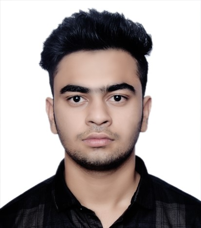

|  |
Harsh DwivediStudent at Ramrao Adik Institute of Technology . I am presently pursuing an engineering degree with an emphasis on electronics. Because of my scientific background, I have a strong interest in technology and am well-versed in it. I've done programming in Python, C++, and HTML, as well as data analysis in SQL and Python, and I've developed and worked on digital arts and design. I've completed an internship in machine learning. Python is my preferred programming language. Creative writing, Illustrator, Photography, and Graphic Editing are some of my other abilities. Learning new things and creating creative work are two of my favorite pastimes. |
Link to Contact Information
| Python | ⭐⭐⭐⭐ |
| HTML | ⭐⭐⭐ |
| Graphic Editing | ⭐⭐⭐⭐ |
| Writing | ⭐⭐⭐⭐ |
| Photography | ⭐⭐⭐ |